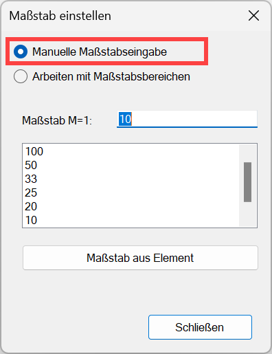
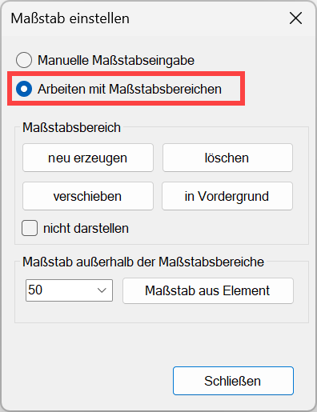
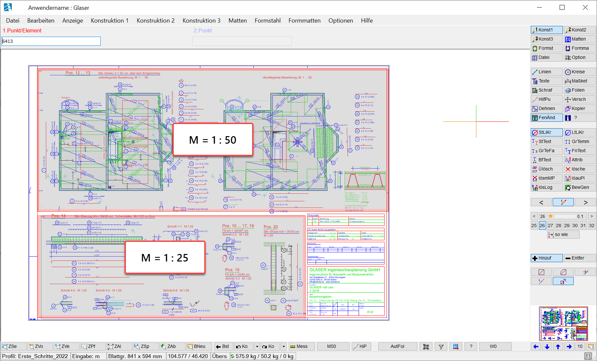

(untere Menüleiste)
Angabe des Maßstabs für die Konstruktion von Elementen.
Auf der Schaltfläche wird der aktuell gültige Maßstab angezeigt. Die Schaltfläche für die Maßstabseinstellungen und die Festlegung der Maßstabsbereiche befindet sich in der unteren Menüleiste. Wenn Sie die Schaltfläche anklicken, wird der Dialog Maßstab einstellen geöffnet.
  |
Manuelle Maßstabseingabe
Dieser Maßstab wird beim Erzeugen neuer Zeichenelemente verwendet. Sie können diesen Maßstab jederzeit während der Planbearbeitung ändern.
Arbeiten mit Maßstabsbereichen
Um zu vermeiden, dass beim Zeichnen der falsche Maßstab benutzt wird, können Sie Maßstabsbereiche festlegen. Sobald Sie in einen Maßstabsbereich klicken, schaltet ISBCAD auf den jeweils vorbestimmten Maßstab um. Die Maßstabsbereiche können Sie optional als Rahmen auf der Zeichenfläche mit dem entsprechenden Maßstab (links oben im Rahmen) anzeigen. Nutzen Sie Maßstabsbereiche z. B., wenn Sie Zeichnungen aus DWG/DXF-Dateien importieren.
Mit der Option Maßstab außerhalb der Maßstabsbereiche geben Sie einen Maßstab ein, mit dem Elemente außerhalb der Maßstabsbereiche gezeichnet werden sollen. Dieser Maßstab gilt auch, wenn Arbeiten mit Maßstabsbereichen aktiviert ist und keine Maßstabsbereiche definiert wurden. Wenn Sie Maßstabsbereiche angelegt haben und zur manuellen Maßstabseingabe wechseln, werden die Maßstabsbereiche solange deaktiviert, bis Sie wieder zu Arbeiten mit Maßstabsbereichen wechseln.
 |
Zugehörige Aufgaben:
·Maßstab einstellen (Manuelle Maßstabseingabe)
·Maßstabsbereiche erstellen und bearbeiten (Arbeiten mit Maßstabsbereichen)
Zugehörige Referenzen:
Siehe auch: